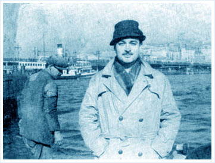

Oğuz Atay’ı okuyabilmek bir insanın hayatında karşılaşabileceği nadir şanslardandır. Bana da nasip olmuş bu şansı sonuna kadar kullanmak amacıyla üstadın rafta duran okumadığım son kitabının kapağını açtım. Korkuyu Beklerken adlı bu kitap Oğuz Atay’ın kısacık ömründe yazdığı hikâyelerinden oluşuyor. Açtım açmasına yalnız ilk öyküden sonrasını okumaya cesaret edemedim. Oldum olası güzel şeyler bitmesin diye tüketmekten çekinirim.
Bu öykü Beyaz Mantolu Adam’ın caminin önünden başlayıp bir halk plajında nihayete eren yolculuğunu anlatılıyor. Bence Beyaz Mantolu Adam’ın “Kalabalık bir topluluk içindeydi. Başarısızdı. Parası yoktu.” girizgâhı, Kafka’nın “Gregor Samsa bir sabah bunaltıcı düşlerden uyandığında, kendini yatağında dev bir böceğe dönüşmüş olarak buldu.” girizgâhından sanatsal olarak fersah fersah ötede. Oğuz Atay’ın diğer kitaplarındakilere benzer şekilde buradaki kahramanımız da bir öteki, yani bir aliénation var. Tabii bu kavram antik çağlardan beri işlenegeldi. Mâmâfih, Oğuz Atay’ın ötekisinin toplumdan soyutlanmış bir karakter olmadığını belirtmek lazım. Hikmet Benol olsun, Selim Işık olsun Turgut Özben olsun klasik öteki tanımından ziyade tutunamayan tanımını hak eden karakterler. Beyaz Montolu Adam da benzer ve farklı yönleriyle işte böyle bir tutunamayan.

Beyaz Mantolu Adam, İsmet Özel’in “Gençtim işte şehrin o yatık raksından incinen yine bendim” dediği gibi değil. Konuşmasa da insanlarla temas kurmaktan çekinmiyor. Bazen de insanlar onu bir fırsat olarak değerlendirip onunla iletişim kurmaya, anlaşmaya çalışıyorlar. Her şekilde bu adamın başkalarına imrendiğini hiç zannetmiyorum. Üstelik kime dokunsa ona fayda sağlıyor. Beyaz Mantolu Adam’ı Hz. İsa’ya benzetenler var. Bence de beş şekilde benziyor. Birincisi bu şekilde bereket dağıtması. Mağaza vitrininde canlı manken görevini ifa ederken kendisini adeta çarmıha germeleri Hz. İsa’ya gönderme belki de. Sonra kuşlara yem atarken de orada bulunan genç Beyaz Mantolu Adam’ı çarmıha benzetti. Üçüncüsü halk plajına girince oradaki topluluğun ve görevlinin hücumuna uğraması ki bu Hz. İsa’nın göğe yükseltilmeden önceki anına benziyor. Yine halk plajında Adam topluluğun hücumundan fenalaşınca sara hastası olduğuna dair sesler yükseliyor. Bazı inanmayanlar, vahyi ve bu sıradaki olağanüstü durumu açıklamak için peygamberlerin sara hastası olduğunu söylüyor. Son olarak, Adam’ın denizde yavaş yavaş kaybolması Hz. İsa’nın göğe çekilişine benziyor. Belki de Beyaz Mantolu Adam ölmemiştir, zira öldüğüne dair bir emare yok.
Beyaz Mantolu Adam’ın bazı özellikleri Hz. İsa’ya benziyor benzemesine ama bence Oğuz Atay bu karakteri Hz. İsa’ya benzetme amacıyla yaratmadı. Ayrıca ikisinin farklı özellikleri de bolca var. Mesela Hz. İsa beşikte konuşmuşken Beyaz Mantolu Adam hiç konuşmuyor. Sadece ikisi de birer naif insan olunca ister istemez Hz. İsa’nın kişiliğinden yansımalar oldu bizim Adam’a.
Beyaz Mantolu Adam kendi adını sonradan edinmiştir ki eğer o mantoyu almasaydı kendini nasıl niteleyecektik acaba? Parayı hiç mi hiç dert etmez. Yolculuğun başında kendini bir cami avlusunda dilenirken bulmuştur. O kadar normal bir insandır ki insanlara dilenciliğini meşru gösterecek bir sebebi bile yoktur. Çok kere karşılıksız iyilik yapmıştır. Yaman pazarlıkçıdır ve anlayabildiğimiz kadarıyla aklına koyduğunu yapar. Hikâyenin başından sonuna kimseye zararı dokunmayan bu adam, arkasından “Amma da hikâye” dedirterek yürüyüp gitmiştir.
Bu hikâye bana geçenlerde yaşadığım bir olayı yeniden düşündürttü. Kuzenlerim anneanneme ördek yavruları getirmişti. Sarıydılar. Her ördek gibi yassı gagaları, sanat eseri perdeli ayakları vardı. Akşam olunca tavukların kümesine koyuldular. Sabah kafesten çıkamayacak haldeydiler, kafaları tavuklar tarafından gagalanmış; beyin travması halindeydiler. Tavuklar karanlıkta nasıl onların farklı olduğunu anlamıştı?